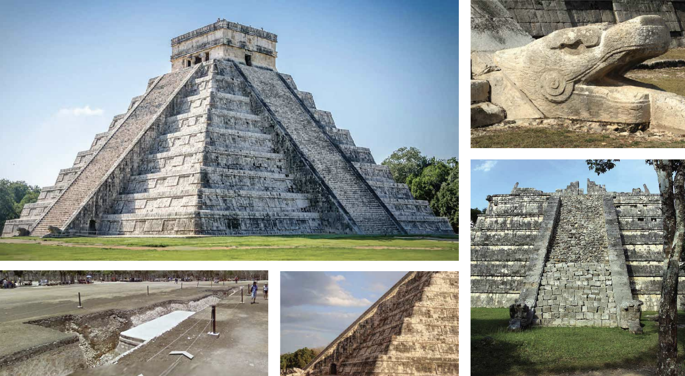
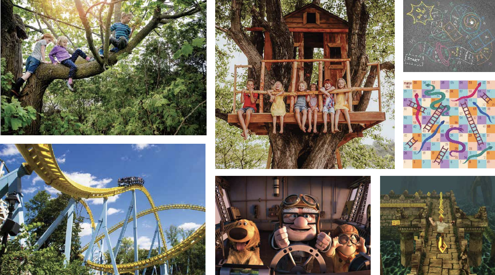

Spatial Intervention | Additive Planes
CHALLENGE: The design goal of this project is to create new ways for visitors to engage with a historic site space. The design has to consist of a path through a portion of the site and vertical planes that define different spatial experiences along the path.
SOLUTION: The design entails a interactive path all around the site of the temple, with elements of a playground to keep it fun while visitors tour around the site. The colored structures that are in color represent the different size groups in addition the the fun elements that were included in the design.
SITE: TEMPLE OF KUKULKAN For the design, there are several focal points that the pathway includes. From the temple as a whole to specific elements on the temple to the surrounding monuments around the temple, the design overlooks the many aspects of the temple that visitors come for.

INSPIRATION AND CONCEPT
The design was inspired by the idea of finding your
inner child that loves to explore. There are elements
that are inspired by curiosity and movement that
connects the path as a whole.
The concept follows that of a playground and obstacle
course with a central hub that branches off and leads
to three different options: one to go to the very top
of the temple​, one to explore the sides more, and one
to make the final descent down.

PLANS AND DIAGRAMS
This section includes the floor plan and sections
that show how the path connects as well as what the
colored sections stand for.
AXONOMETRIC VIEWS
These images show the pathway connections as well as
the dynamic flow of the pathway. The hub is shown as
the central area that is then branched out to
different option that the visitors can take.
KEY ASPECTS
Here you can see different parts of the path in
perspective to see how visitors would walk along
this path. The different structures can be seen to
give more of an idea on how visitors would move from
start to finish.